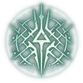

Eternal Edict, also called the Dreamless pathway, receives revelations from Fate and uses them to perceive, manipulate, weave, and judge destinies. Its practitioners can escape an original fate through a false death, while its highest authorities concern Fate’s Weaving, Judgement, and eternal life. The Goddess of Fate grants advancement through Boons.
Non-standard pathway lore and Outer Deity corruption details contain major story spoilers.Detailed description
Eternal Edict, also called the Dreamless pathway, receives revelations from Fate and uses them to perceive, manipulate, weave, and judge destinies. Its practitioners can escape an original fate through a false death, while its highest authorities concern Fate’s Weaving, Judgement, and eternal life. The Goddess of Fate grants advancement through Boons.
Paraphrased from the Lord of the Mysteries Wiki pathway article.
Complete wiki information
Full main-article information imported from the Eternal Edict Pathway wiki article. Existing archive pathway details above are preserved.
Weave fate, gather fate, judge fate—achieve eternal life within fate.
Overview
"永生" (Yǒngshēng) which means "Eternal Life'". It's the same as the Goddess of Fate's Honorific Name: "The Eternal Goddess of the Future" ("永生的未来女神").
"律" (lǜ): refers to "定律" which means "Law", especially the laws of nature.The Eternal Edict Pathway specializes in gaining revelations from Fate and using them to achieve various results. Their abilities include the ability to manipulate the fate of others or themselves, weave fates, and escape their fates through death. At High-Sequences, "They" hold authority over the Weaving and Judging of Fate, achieving Eternal Life through Fate.[1]
This Pathway is one of the new Pathways introduced in Circle of Inevitability. It exists outside the twenty-two Standard Pathways, but is still classified into Sequence 9 to Sequence 0.[2] The author described this Pathway as a "Weaver of Fate".[3]
On Earth, the Beyonders of this Pathway do not advance through Potions, but by praying to the Outer Deity, Goddess of Fate, who is the Above the Sequence of this Pathway, for a Boon. The corresponding Sefirah is the Goddess of Fate's currently unnamed Sefirah.
This Pathway is the only Pathway under the Goddess of Fate.[4]
Sequence Levels
| Eternal Edict Pathway Index | ||
|---|---|---|
| Sequence | Name | |
| Low SequenceSimplified Chinese: 低序列 | ||
| 9 | Dreamless
| |
| 8 | Musician
| |
| Mid SequenceSimplified Chinese: 中序列 | ||
| 7 | Fate Pryer
| |
| 6 | Mute
| |
| 5 | Deceased
| |
| High SequenceSimplified Chinese: 高序列 - SaintSimplified Chinese: 圣者 | ||
| 4 | Fatebender
| |
| 3 | Fate's Attendant
| |
| High SequenceSimplified Chinese: 高序列 - AngelSimplified Chinese: 天使 | ||
| 2 | Web Weaver[2]
Alternate Name:
| |
| 1 | Blade of Fate
| |
| True GodSimplified Chinese: 真神 | ||
| 0 | Eternal Edict[2]
Literal Translation:
| |
Pathway Symbol

The official symbol of the Eternal Edict Pathway.[6]
Corresponding Ingredients
Browse the local Eternal Edict Pathway ingredient archive →
Unknown
Mythical Creature Form
Three bodies standing side by side. The left body is eyeless, weaving fate; the middle body is armless, gathering fate; the right body is headless, judging fate.[1] "Their" hair and eye color can be different depending on the head.[7]
Web Weaver
The Mythical Creature Form is still three-bodied, but the armless and headless bodies are blurred and indistinct, not yet fully formed. The eyeless body gains preliminary contact with the Authority of Weaving Fate.[1] "They" are women with closed eyes, weaving webs of fate.[8]
Blade of Fate
The headless body becomes distinct, and gain preliminary control over the Authority of Judging Fate.[1] "They" wield illusory, silvery dirks that seem capable of severing the threads of fate and cutting off branches of the River of Fate.[8]
Neighboring and Compatible Pathways
Compatible Pathways to the Eternal Edict Pathway include, but might not be limited to, the following:
- Pathways under the Key of Light:[9][10]
- Pathways under the Circle of Inevitability:

- Some Pathways under the Lord of Mysteries:[9]
- Some Pathways under the God Almighty:[9]
- Some Pathways under the Eternal Darkness:
- Pathways under the Primordial Hunger:


High-level abilities
The pathway’s upper abilities are inseparable from the corruption of its Outer Deity. These powers are expressed through Boons, mystical influence, and the gradual replacement of ordinary cause-and-effect with the pathway’s domain.
- Weaves new fates and possibilities for herself or others, destabilizing a powerful being’s body by altering its destiny.
- Severs a target’s River of Fate and tributaries, indirectly controlling its future, dreams, and available outcomes.
- Applies Final Judgement so that beings below the Above-the-Sequence level helplessly face an approaching end.
- Returns consciousness and spirit from the River of Fate to manifest a new body, and can weave her own fate to evade otherwise overwhelming cosmic forces.
Corruption from Goddess of Fate
The Goddess of Fate is the pathway’s Outer Deity and primary source of Boons. Corruption can appear as physical mutation, mental contamination, altered fate, environmental collapse, or the rewriting of reality, depending on the pathway’s authority.
Known corruptive effects
- Weaves new fates and possibilities for herself or others, destabilizing a powerful being’s body by altering its destiny.
- Severs a target’s River of Fate and tributaries, indirectly controlling its future, dreams, and available outcomes.
- Applies Final Judgement so that beings below the Above-the-Sequence level helplessly face an approaching end.
- Returns consciousness and spirit from the River of Fate to manifest a new body, and can weave her own fate to evade otherwise overwhelming cosmic forces.
Advancement warning
Unlike the standard pathways, Earth-side advancement is recorded as receiving a Boon through prayer to Goddess of Fate. That connection is also the main route through which the Outer Deity’s will, symbols, and corruption can enter the practitioner.
Major story spoilers. The corruption summary is a paraphrase of the linked source material.